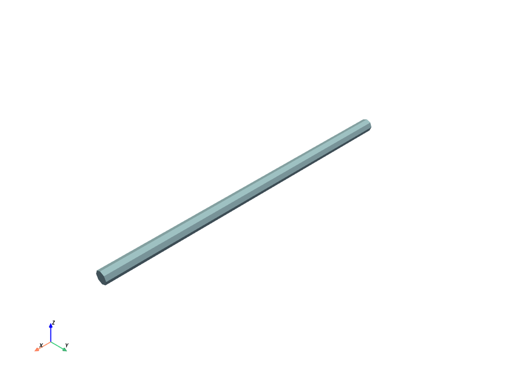
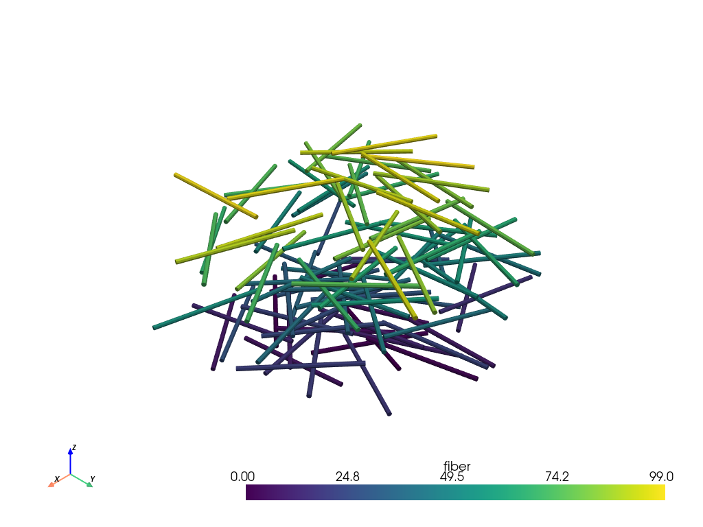
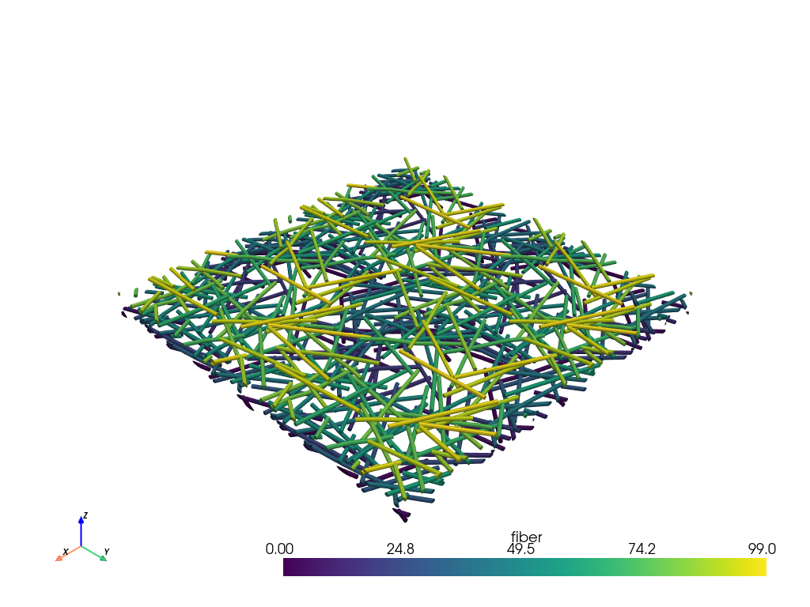

🌐 Render
vtk_fiber
{kind=link}
- fibermat.render.vtk_fiber(length=25.0, width=1.0, thickness=1.0, x=0.0, y=0.0, z=0.0, u=1.0, v=0.0, w=0.0, shear=1.0, tensile=inf, index=None, r_resolution=1, theta_resolution=8, z_resolution=20, **kwargs)
Export a fiber as VTK mesh using pyvista.CylinderStructured.
Parameters
- lengthfloat, optional
Fiber length (mm). Default is 25 mm.
- widthfloat, optional
Fiber width (mm). Default is 1 mm.
- thicknessfloat, optional
Fiber thickness (mm). Default is 1 mm.
- xfloat, optional
Fiber position: X-coordinate (mm). Default is 0 mm.
- yfloat, optional
Fiber position: Y-coordinate (mm). Default is 0 mm.
- zfloat, optional
Fiber position: Z-coordinate (mm). Default is 0 mm.
- ufloat, optional
Fiber orientation: X-component. Default is 1.
- vfloat, optional
Fiber orientation: Y-component. Default is 0.
- wfloat, optional
Fiber orientation: Z-component. Default is 0.
- shearfloat, optional
Shear modulus (MPa). Default is 1 MPa.
- tensilefloat, optional
Tensile modulus (MPa). Default is ∞ MPa.
- indexint, optional
Fiber label.
Returns
- pyvista.StructuredGrid
VTK mesh.
Other Parameters
- r_resolutionint, optional
Number of elements along the radius of the fiber. Default is 1.
- theta_resolutionint, optional
Number of points on the circular face of the fiber. Default is 8.
- z_resolutionint, optional
Number of points along the length of the fiber. Default is 20.
- kwargs :
Additional keyword arguments ignored by the function.
Note
- If index is not None, the following fields are added to the VTK mesh:
“fiber” : fiber index
“lbh” : fiber dimensions (mm)
“xyz” : local fiber coordinates (mm)
“uvw” : fiber orientation vector
“G” : shear modulus (MPa)
“E” : tensile modulus (MPa)
vtk_mat
{kind=link}
- fibermat.render.vtk_mat(mat=None, **kwargs)
Export a
Matobject as VTK mesh.Parameters
- matpandas.DataFrame, optional
Set of fibers represented by a
Matobject.
Returns
- pyvista.UnstructuredGrid
VTK mesh.
Other Parameters
- kwargs :
Additional keyword arguments passed to
vtk_fiber()function.
Note
- The following fields are added to the VTK mesh:
“fiber” : fiber index
“lbh” : fiber dimensions (mm)
“xyz” : local fiber coordinates (mm)
“uvw” : fiber orientation vector
“G” : shear modulus (MPa)
“E” : tensile modulus (MPa)
vtk_mesh
{kind=link}
- fibermat.render.vtk_mesh(mat=None, mesh=None, displacement=None, rotation=None, force=None, moment=None, **kwargs)
Export a
Meshobject as VTK mesh.Parameters
- matpandas.DataFrame, optional
Set of fibers represented by a
Matobject.- meshpandas.DataFrame, optional
Fiber mesh represented by a
Meshobject.
Returns
- pyvista.UnstructuredGrid
VTK mesh.
Other Parameters
- displacementnumpy.ndarray, optional
Displacement field.
- rotationnumpy.ndarray, optional
Rotation field.
- forcenumpy.ndarray, optional
Load field.
- momentnumpy.ndarray, optional
Torque field.
- kwargs :
Additional keyword arguments passed to
vtk_fiber()function.
Hint
- The following fields are added to the VTK mesh:
“fiber” : fiber index
“lbh” : fiber dimensions (mm)
“xyz” : local fiber coordinates (mm)
“uvw” : fiber orientation vector
“G” : shear modulus (MPa)
“E” : tensile modulus (MPa)
- If displacement is not None:
“displacement” : displacement field (mm)
“rotation” : rotation field (rad)
“curvature” : curvature field (1 / mm)
- If force is not None:
“force” : force field (N)
Example
from matplotlib import pyplot as plt
from fibermat import *
# Create a VTK fiber
vtk_fiber().plot()
# Generate a set of fibers
mat = Mat(100)
# Build the fiber network
net = Net(mat, periodic=True)
# Stack fibers
stack = Stack(mat, net)
# Create the fiber mesh
mesh = Mesh(stack)
# Create a VTK mat
vtk_mat(mat).plot()
# Create a VTK mesh
vtk_mesh(mat, mesh).plot()
# Solve the mechanical packing problem
K, C, u, f, F, H, Z, rlambda, mask, err = solver(
mat, mesh, packing=4, lmin=0.01, coupling=0.99
)
# Export as VTK
vtk = vtk_mesh(mat, mesh,
*u(1).reshape(-1, 2).T,
*(f(1) @ C).reshape(-1, 2).T)
vtk.plot(scalars="force", cmap=plt.cm.twilight_shifted)
{kind=link}